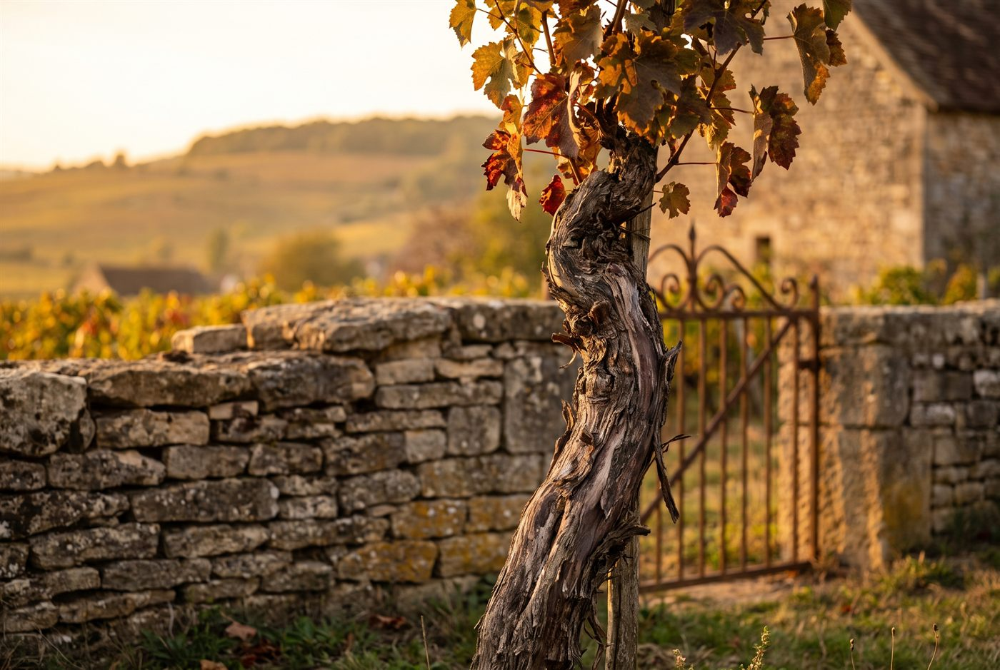

Les domaines · Côte de Nuits · Gevrey-Chambertin
Gevrey-Chambertin · Côte de Nuits
Domaine Henri Magnien
Pinots noirs de Gevrey-Chambertin fins et élégants, de Ruchottes-Chambertin aux premiers crus Cazetiers et Lavaux-Saint-Jacques.

Ambiance de Gevrey-Chambertin
La famille Magnien est établie à Gevrey-Chambertin depuis 1656, et le domaine actuel a été constitué en 1987 par Henri Magnien avec son fils François et son petit-fils Charles. Charles Magnien dirige aujourd'hui les huit hectares répartis entre Gevrey-Chambertin et Corton et ne produit que des rouges de pinot noir, dont une sélection massale issue du Pinot Magnien, une mutation repérée dans les vignes familiales vers 1850. Macérations à froid, levures indigènes et bois neuf mesuré donnent des vins fins et élégants, fidèles à chaque climat.
Rouges
Pinot noirVignes d'une cinquantaine d'années sur oolithe blanche et calcaire de Prémeaux.
Pinot noirVignes presque centenaires sur calcaire à silex, parcelle ajoutée récemment en Côte de Beaune.
Pinot noirSept parcelles sur quatre types de sols, avec de vieilles vignes de Pinot Magnien.
Pinot noirVignes d'une soixantaine d'années sur sol argilo-calcaire.
- Gevrey-Chambertin 1er Cru Estournelles Saint-JacquesGevrey-Chambertin 1er Cru Estournelles Saint-Jacques#
Pinot noirPremier cru situé juste au-dessus de Lavaux Saint-Jacques, dans la combe de Lavaux.
Pinot noirVignes d'environ 35 ans.
Pinot noirExposition est, vignes de plus de 60 ans à 340 m d'altitude.
Pinot noirVignes plantées en 1915, dont du Pinot Magnien.
Pinot noirLieu-dit, vignes de 55 ans sur calcaire à entroques et argiles ferrugineuses.
Pinot noirAssemblage de quinze parcelles du village.
Ces cuvées vous parlent ?
Demander les disponibilités